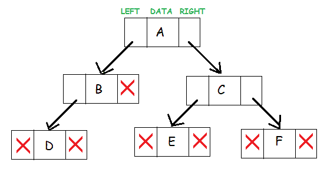
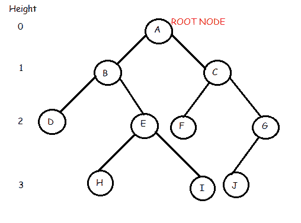
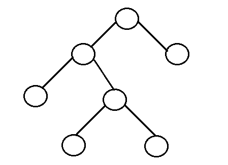
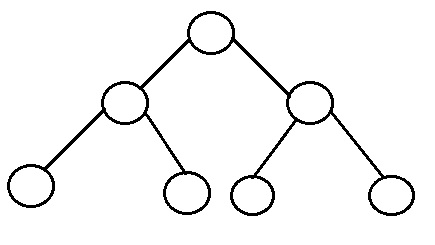
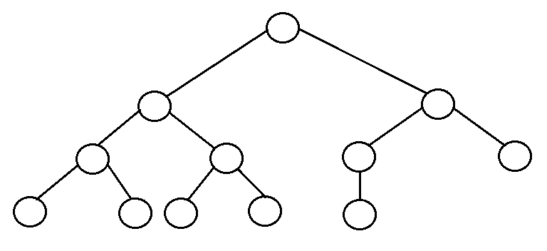
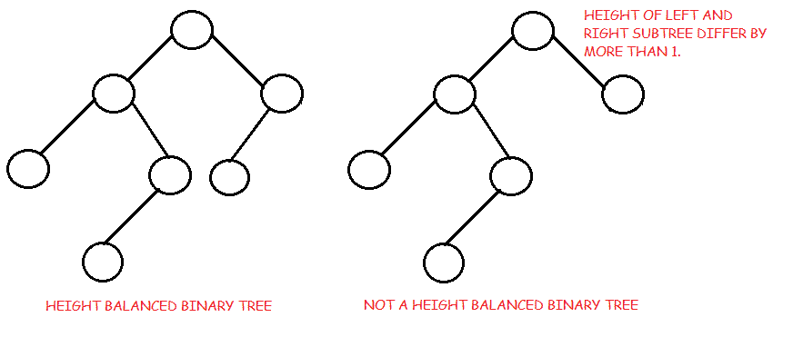
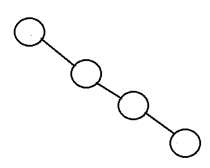

二叉树介绍
原文：https://www.studytonight.com/data-structures/introduction-to-binary-trees
二叉树是一种分层数据结构，其中每个节点最多有两个子节点，通常称为左子节点和右子节点。
每个节点包含三个组件:
- 指向左子树的指针
- 指向右子树的指针
- 数据元素
树中最顶端的节点称为根。空树由空指针表示。
二叉树的表示如下所示:

二叉树:常用术语
- 根:树中最顶端的节点。
- 父节点:树中的每个节点(不包括根)都由恰好来自另一个节点的有向边连接。这个节点称为父节点。
- 子节点:当远离根节点时，直接连接到另一个节点的节点。
- 叶/外部节点:没有子节点的节点。
- 内部节点:至少有一个子节点的节点。
- 节点深度:从根到节点的边数。
- 节点高度:从节点到最深叶的边数。树的高度就是根的高度。

在上面的二叉树中我们看到根节点是 A 。该树有 10 个节点，5 个内部节点，即 A、B、C、E、G ，5 个外部节点，即 D、F、H、I、J 。这棵树的高度是 3。 B 是 D 和 E 的父母，而 D 和 E 是 B 的子女。
树木的优势
树木之所以如此有用和频繁使用，是因为它们有一些非常重要的优势:
- 树反映了数据中的结构关系。
- 树用于表示层次结构。
- 树提供了有效的插入和搜索。
- 树是非常灵活的数据，允许以最小的努力移动子树。
二叉树的类型(基于结构)
- 有根二叉树:它有一个根节点，每个节点有两个子节点。
Full binary tree: It is a tree in which every node in the tree has either 0 or 2 children.

- 完整二叉树中的节点数 n 至少为 n = 2h–1，atmatn = 2h+1–1，其中 h 为树的高度。
- 全二叉树中叶节点 l 的个数为内部节点+ 1 的 L ，即 l = L+1 。
Perfect binary tree: It is a binary tree in which all interior nodes have two children and all leaves have the same depth or same level.

- 有 l 叶子的完美二叉树有 n = 2l-1 个节点。
- 在完全二叉树中， l = 2h 和 n = 2h+1 - 1 ，其中， n 为节点数， h 为树高， l 为叶节点数
Complete binary tree: It is a binary tree in which every level, except possibly the last, is completely filled, and all nodes are as far left as possible.

- n 个节点的完全二叉树内部节点数为层(n/2) 。
Balanced binary tree: A binary tree is height balanced if it satisfies the following constraints:
- 左右子树的高度最多相差一，与
- 左边的子树是平衡的，与
- 右边的子树是平衡的
一棵空树是高度平衡的。

- 平衡二叉树的高度为 0(Log n)，其中 n 为节点数。
Degenarate tree: It is a tree is where each parent node has only one child node. It behaves like a linked list.
